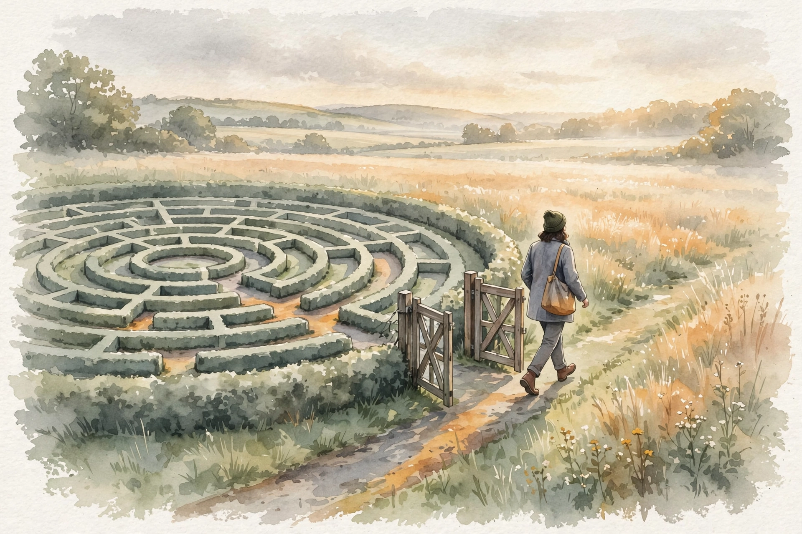
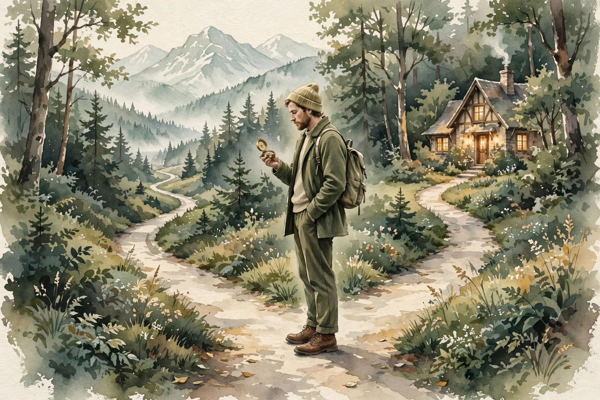

Diary of a CEO · Episode Companion
Detach From Overthinking
Dr. Julie Smith is a clinical psychologist with more than three million followers, an NHS veteran, and the author of a book about the tools nobody taught us. Her message in this conversation: instant relief is addictive and keeps you stuck, while the things that work in the long term are hardest in the moment.
Illustration. Peace inside, storm outside: detachment is a skill. AI-generated watercolor made for this page.
Watch. The official Diary of a CEO episode video. Use the chapter menu above to move through this companion as you listen.
The Wisdom Index: every nugget in this companion
~00:01
Intro: Two Paths
The things that tend to work in the long term are hardest in the moment.
Dr. Julie Smith · Episode ~00:01
Steven Bartlett opens with Dr. Julie Smith, clinical psychologist, author, and teacher to more than three million followers. Her opening distinction frames the whole conversation. The things we do habitually under stress, going to the fridge, grabbing the wine, whatever it is, are the things that work instantly. And they are addictive because they work instantly
.
The trap: instant relief works so quickly that the next time the feeling comes, you need the safety behavior even more. In the long term it keeps you stuck. Meanwhile the things that work in the long term, sitting with it and feeling it
and using skills to get yourself through it, are hardest exactly when you need them most.
Two paths from the same bad feeling
Schematic of Smith's opening distinction. Relief now vs freedom later.
Source: Diary of a CEO, Detach From Overthinking, ~00:01. Distinction per Smith.
Nugget 1 · Relief
Instant relief is addictive
What happened. Coping habits like the fridge or the wine hook you through sheer speed. Each use raises the need for the safety behavior next time.
Why it matters. Speed is the trap. The faster the relief, the tighter the loop.
The principle. Distrust the instant fix. Ask what it costs tomorrow.
Nugget 2 · Skills
The long-term path is hardest in the moment
What happened. The things that work in the long term, staying present with the feeling and using skills to get through it, are hardest exactly when you need them.
Why it matters. Difficulty is not a sign the skill is wrong. It is the price of the skill.
The principle. When it is hardest, that is the work. Stay.
~00:20
Outdated Survival Strategies

Illustration. The cycle has a gate. Awareness finds it. AI-generated watercolor made for this page.
Smith explains where stuck patterns come from. In a difficult early relationship, a child develops survival strategies and safety behaviors to cope. As an adult, no longer dependent on parents, those strategies keep playing out in adult relationships. They are essentially outdated coping strategies, a lifetime of habit you cannot break by telling yourself to stop.
Therapy, she says, is great for looking at the patterns and cycles people feel stuck in, and how they reflect those early experiences. The work takes time and practice. You cannot argue a lifetime of habit out of existence.
Nugget 3 · Origins
Outdated survival strategies
What happened. Childhood safety behaviors, built for a difficult early relationship, keep running in adult life long after the danger is gone.
Why it matters. You are not weak. You run an old defense in a new war.
The principle. Ask what the behavior once protected you from. Then retire it.
Nugget 4 · Therapy
Map the cycle
What happened. Smith maps the cycle with clients: what led up to the feeling, what made you vulnerable, what you did after, and whether it helped or made things worse.
Why it matters. An unmapped cycle is fate. A mapped cycle is a choice waiting to happen.
The principle. Write the last bad week as a loop: trigger, vulnerability, action, result.
~00:25
Hindsight, Recognition, Choice
Breaking the cycle has an order, and it starts after the fact. First you acknowledge the cycle in hindsight: last week that happened, and I went around the loop again. Do that enough times and you start to recognize it while you are in it. As you are about to act, something says hang on, this is predictable, I see the pattern.
That recognition is the beauty of awareness: in that moment you get a chance to choose. Sometimes you go with the old pattern and loop again. Sometimes you do the other thing you already worked out, and you break the cycle and get the benefits. It is a long process of sometimes looping and sometimes breaking, until the new life takes hold.
Nugget 5 · Change
Hindsight first, then recognition, then choice
What happened. Change follows a sequence: acknowledge the cycle in hindsight, then recognize it live, then choose the alternative you prepared.
Why it matters. Skipping to willpower fails. The sequence builds the muscle in the right order.
The principle. Do not try to break it today. Just notice it today. Breaking comes later.
~00:40
Bad Days Into Not-So-Bad Days
Her book's central promise, as Bartlett frames it: turn bad days into not-so-bad days. The lever is the triangle between decisions, moods, and actions. They feed each other in both directions. A low mood drives a poor decision, the decision drives a worse action, and the action deepens the mood.
The intervention is modest and honest. You cannot always turn a bad day good. But you can shrink it. One better decision, one kinder action, and the triangle starts feeding the other way. Smith learned the patience for this in her NHS work: when someone is really unwell and there is a lot to work through, it takes a long time, and that is okay.
The mood-decision-action triangle
Schematic. Each corner feeds the other two, in both directions.
Source: Diary of a CEO, Detach From Overthinking, ~00:40. Triangle per Smith via Bartlett.
Nugget 6 · Bad days
Bad days can become not-so-bad days
What happened. Moods, decisions, and actions form a triangle that feeds itself. One better decision or one kinder action starts turning it the other way.
Why it matters. You do not need a good day. You need one better corner.
The principle. On a bad day, shrink the goal: one decision, one action, slightly better.
~00:30
Nothing Has to Be Permanent

Illustration. What do you like about each path? Build the balance. AI-generated watercolor made for this page.
Smith turns to the question behind overthinking: values. She describes questioning herself about public life versus a quiet, private life, and lands on the liberating line that none of them have to be permanent
. If you skip an opportunity, it is probably not all over. You can take six months off, hide on an island, come back, and try public life again.
The method: work out what you like and want about each option, then create the balance for you. She questions the lesson that we must just strive for extraordinary and stand out from the crowd. Maybe a quiet life is fine. She admits she is as much a victim of the pressure as anyone.
Nugget 7 · Values
Nothing has to be permanent
What happened. Smith argues choices are experiments, and reversibility is the rule. Try the island for six months, then come back and compare.
Why it matters. Permanence is what makes decisions heavy. Reversibility makes them light.
The principle. Treat the big choice as a trial. Ask what you want from each path, then build the balance.
Nugget 8 · Ambition
Question the extraordinary
What happened. Smith challenges the taught lesson that we must strive for extraordinary and stand out. A quiet, private life is a legitimate value.
Why it matters. Overthinking often starts with borrowed goals. Checking the goal against your values ends the spiral at its source.
The principle. Ask whose extraordinary you pursue. Keep it only if the answer is you.
~00:55
It Takes Time
Smith's authority comes from the unglamorous years. In her NHS work she learned that when someone is really unwell, healing takes a long time, and that is okay. Not everything has to be done yesterday. She left the NHS to work school hours around her family, expecting to advertise her private practice. She never had to: therapy is private, and when it works, word of mouth carries it.
The closing thread ties back to the opening. People who get through it, she says, believe in the tools they learned, and they share them. That is the whole project: learn the tools, use them in the hard moment, and pass them on.
The episode in seven lines
- Instant relief is addictive because it works instantly. It keeps you stuck.
- What works in the long term is hardest in the moment: sit with it and feel it.
- Stuck patterns are outdated survival strategies from early life. Name the old war.
- Map the cycle, then break it in order: hindsight, recognition, choice.
- You cannot always make a bad day good, but you can make it not-so-bad. Change one corner of the triangle.
- Nothing has to be permanent. Treat big choices as six-month experiments.
- Question the extraordinary. A quiet life aligned with your values beats a loud one that is not.
Distilled from Diary of a CEO, Detach From Overthinking with Dr. Julie Smith (~1h36m). Full episode: youtube.com/watch?v=iLlrIi9-NfQ. The cycle work and the values discussion are hers from clinical practice. Timestamps marked ~ are proportional estimates from transcript position. They may be off by a few minutes.